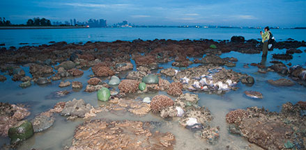
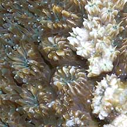
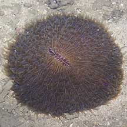
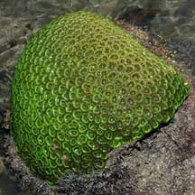
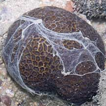
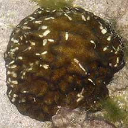
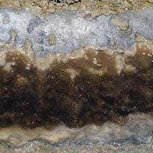
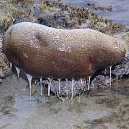
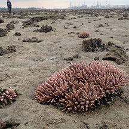

|
|
| hard corals text index | photo index |
| ecosystems | rocky | sandy | seagrass | coral rubble | coral reef |
| Phylum Cnidaria > Class Anthozoa > Subclass Zoantharia/Hexacorallia |
| Hard
corals and coral reefs Order Scleractinia updated Nov 2019
Where seen? Hard corals reefs are commonly seen on many of our Southern shores. Some are also found on our Northern shores. At low tide, they are often mistaken for non-living rocks or dead corals. Many of them may actually be alive! Please don't step on them. Does Singapore have any reefs left? Much of our reefs have been affected by land reclamation and coastal development. These works have not only reduced live coral coverage by about 65% since the 1980's, but also resulted in murky waters which reduced sunlight penetration from 10m in the 1960's to about 2m today. But Singapore's remaining reefs still has about half as many coral species as the Great Barrier Reef although our reefs are only 0.01% in size. Most of our amazing reefs are hidden from view in the sediment-laden waters, due to on-going coastal development. But during low tide, the water clears up and some of our reefs are revealed. Ordinary people can view our rich shores without having to swim or dive. Some of Singapore's best reefs are just half an hour away from the city centre! Where can we explore coral reefs in Singapore? Labrador has the last large mainland reef. There are also reefs at Sentosa, St. John's Island, Kusu Island and Sisters Islands and Pulau Semakau. |
 Kusu Island has living reefs just minutes from the city centre Kusu Island, Jun 12 |
 Reclamation of a living reef at Sentosa for the Integrated Resort. Sentosa, Jul 07 |
| What are hard corals? Hard
corals produce a hard skeleton and belong to Order Sclerectinia,
'Sclero' means 'hard'. This
is part of Class Anthozoa that includes soft corals and sea
anemones. All of these belong to Phylum
Cnidaria, which includes jellyfishes and hydroids. There
are about 3,600 known species of hard corals, making them the largest
group in the Class Anthozoa. Each hard coral is a colony of tiny animals called polyps. Each polyp produces a hard skeleton. What you see as a hard coral is the joined up skeletons of countless tiny polyps. More about the polyps: Each polyp is very similar in structure to sea anemones. The polyp comprises a tube-like body column. One end of the tube has a disk with the mouth in the centre (and is thus called the oral disk), usually ringed with 6 (or multiple of 6) tentacles that are smooth and unbranched. The other end of the tube ends in a pedal disk that is attached to the base of its skeleton. The polyps in a colony are connected to one another by living tissue that covers the entire surface of the colony. So please don't step on living corals as you will damage the tissues, even though the polyps are retracted. Most hard corals have tiny polyps 1-3mm in diameter. But some hard corals such as mushroom corals are enormous solitary polyps. |
 Each polyp creates a tiny skeleton Galaxy coral Raffles Lighthouse, Jul 05 |
 Pore corals have tiny corallites. Sisters Island, Jan 06 |
 Flowery disk corals have large corallites. Cyrene Reef, Jun 08 |
| More about the skeleton:Each
tiny coral polyp produces a tiny external skeleton made up of calcium
carbonate. Called a corallite, this skeleton protects them and provides
support. Most
of the polyp's body column is usually hidden in the corallite. The
polyp can retract into its corallite to hide from predators or to
avoid drying out when the colony is exposed at low tide. The various shapes and surface patterns of hard corals arise from the way the corallites are arranged. Here's more about some common shapes and textures of hard corals. Although hard coral polyps are tiny, they may produce a stony structure that is several metres in diameter, weigh tons and be made up of hundreds of thousands of polyps. Huge coral reefs are made up of the skeletons of these tiny polyps, living ones growing over the skeletons of dead ones. It is estimated that one square metre of living hard corals produce 10kg of new calcium carbonate a year! Most hard corals grow attached to a hard surface. But mushroom corals lie unattached as adults. |
 Flowery disk corals have large polyps with short body columns. Sentosa, Jun 07 |
 With long polyps that hide the hard skeleton, the Anemone coral is indeed often mistaken for a sea anemone. Sisters Island, Dec 05 |
 The mushroom hard coral is a giant solitary polyp! Sisters Island, Feb 07 |
| How does the colony grow bigger? New calcium carbonate is constantly secreted by living tissues. But
each polyp generally has a fixed adult size. Thus with time, the corallite
becomes deeper. Periodically, the polyp lifts its base and builds
a new floor, sealing off a little space below. As the colony grows,
there develops a 'condominium' of abandoned floors, with the living
polyps only on the top floor! The colony also grows as new polyps may bud off from existing polyps. The buds may arise from the oral disk, column or base of the 'parent' polyp. Or new polyps may arise from the common tissue in between existing polyps. What do they eat? All hard corals are carnivores. Those with small polyps feed on plankton or collect finer particles using mucus films and strands. Some hard coral polyps lack tentacles (e.g., members of the Family Agaridae) and rely entirely on mucus to gather suspended food particles from the water. Hard corals can produce a large quantity of mucus. Larger polyps may capture small fish. Some coral polyps only extend their tentacles to feed at night, and remain retracted in their skeletons during the day. Yet others feed both day and night. The polyps of all reef-building hard corals harbour microscopic, single-celled algae (called zooxanthellae). The polyp provides the zooxanthellae with shelter and minerals. The zooxanthellae carry out photosynthesis inside the polyp and share the food produced with the polyp. The white colour of the skeleton is believed to assist in photosynthesis by reflecting light onto the zooxanthellae. It is believed the additional nutrients provided by the zooxanthellae are vital to hard coral health and growth. Thus clear waters that let sunlight through for photosynthesis is important for healthy reef growth. Many of the hard corals on our shores, however, are adapted to murky waters. A study suggests some corals glow in the dark to help or to protect the zooxanthellae. Called flourescence, this happens when pigments in the coral polyp transform solar radiation into less damaging wavelengths. In this way, polyp pigments act as a sunscreen to prevent damage to the zooxanthellae within the coral polyp. Corals may fluoresce even during the day, but the sunlight is so strong that you can't see it. Fiercely Territorial: There is competition among hard corals for the best locations for gathering food or getting sunlight for their zooxanthellae. Although they can't move about, hard corals can defend their territories against other encrusting animals that might try to settle near them or grow over them. Some can produce filaments or special long tentacles (called sweeper tentacles) to clear the surrounding area of pesky intruders. |
 Some corals flouresce at sunset. Kusu Island, Jun 04 |
 Some produce slime to clean themselves. Sisters Island, Dec 10 |
 Long sweeper tentacles produced by Galaxy coral. Pulau Semakau, Sep 05 |
| Coral Babies: Hard corals can
reproduce asexually by budding. A piece of living hard coral that
breaks off may continue to grow into a separate coral. However, they also reproduce sexually. A polyp may produce sperm or eggs, but usually only either one at a time. Some corals release their eggs and sperm all the same time. Called broadcast spawners, these mass spawning events usually occur once a year, a few nights after full moon. During this time, many species may spawn at the same time, resulting in an upward rising 'snow' as eggs and sperm drift to the water surface where fertilization occurs. After a few days, the embryos will have developed into free-swimming larvae that eventually settle down on a suitable surface.  A stylised depiction of the reproductive cycle of Acropora. From "Effects of sediments on the reproductive cycle of corals R. Jonesa, G.F. Ricardoa, A.P. Negria, 2015 on ScienceDirect" Does mass spawning happen in Singapore? Yes it does! More on the wild shores of singapore blog. While bazillions of eggs and sperms are released during a mass spawn, most don't make it. Hordes of marine creatures gorge on the spawn, from fishes and crabs to jellyfishes. As the tiny coral larvae develop, they have to survive the countless predators that constantly sieve the water for plankton and edible bits. As well as many other challenges that we are still learning about. Excessive sedimentation, for example, can interfere with fertilisation and other aspects of coral larvae survival and successful settlement. |
| Singapore's
corals go wild! Mass spawning in 2010 Synchronous Mass Coral Spawning 2010, Singapore from Karenne Tun on Vimeo. |
| Role in the habitat: The partnership
between hard corals and zooxanthellae
allows hard corals to thrive in clear nutrient-poor tropical waters.
Like trees in the rainforest, hard corals provide the basis of life
on the reef. Their hard structures provide shelter for small animals,
a nursery for ocean-going creatures and protect the shoreline from
strong waves, storms and erosion. Human uses: Living coral reefs are worth far more to humans when they left alone. Reefs bring in tourists which generate business beyond the shore (e.g., hotels, restaurants and travel-related industries). Reefs are also homes to a bewildering variety of creatures, some of which protect themselves with toxins or other chemicals that may have pharmaceutical applications. A few hard coral species are being used in surgery because their internal structure is similar to human bone. Used in bone grafts, especially in facial reconstruction, small coral implants quickly become infiltrated by blood vessels. Humans often take for granted the usefulness of coral reefs as nurseries for important seafood and in protecting shorelines. We do not realise these services that they provide, until we have lost the reefs. |
 Bites of fishes on a hard coral. Sisters Island, Nov 05 |


| Status and threats: Many of our hard corals are listed among the threatened animals
of Singapore (see cnidarians in general for a list of these threatened corals). Human destroy reefs in many ways. Destructive methods are used to capture live reef animals for the aquarium trade or 'live' fish trade for restaurants. Cyanide is sometimes used which kills corals. Or bomb fishing techniques that destroy reefs. Hard corals are mined for building materials or harvested for the aquarium trade. Like other creatures harvested for the live aquarium trade, most die before they can reach the retailers. Without professional care, most die soon after they are sold. Those that do survive are unlikely to breed successfully. Coral reefs are also affected by boaters who throw their anchors carelessly, and thoughtless divers and shore visitors who damage fragile features. Land reclamation buries reefs. While coastal development and dredging raises sediment levels in the water which block out sunlight needed by the zooxanthellae partners of hard corals and affects hard coral health. Global warming may raise the temperature and acidity of the ocean and result in more extreme weather conditions. These will seriously affect the health of coral reefs. Like other creatures of our shores, trampling by careless visitors and over-collection by hobbyists also have an impact on local populations. What is coral bleaching? Zooxanthellae contribute to the colour of coral polyps. When coral are stressed, there may be mass loss of zooxanthellae in a hard coral colony. As a result, the underlying white skeleton shows through the now transparent polyps. The coral colony thus appears white or 'bleached'. Without the food provided by the lost zooxanthellae, the polyps will be stressed and prone to diseases. Skeleton production and reproduction are also affected. Once the cause of bleaching is removed, however, polyps may eventually regain zooxanthellae (which live freely in the water) and thus recover their colour and health. But prolonged bleaching can seriously damage large sections of a reef. Bleaching doesn't only happen to hard corals, but may also affect other animals that have a similar relationship with zooxanthellae, such as sea anemones, soft corals and giant clams. Factors believed to cause bleaching include: temperature fluctuations (too high or too low), excessive exposure to ultraviolet light, excessive sedimentation in the water, changes in salinity (such as due to flooding), pollution, oil spills and disease. |
 Coral bleaching Sisters Island, Nov 05 |
 Diseased coral after bleaching. Sisters Island, Ju 10 |
 Some produce mucus to protect themselves. Pulau Biola, May 10 |
| Mass coral bleaching: It is generally believed that bleaching is related to unusual prolonged temperature increases in the seawater. Hard corals harbouring zooxanthellae live close to the upper limit of temperature tolerance. Thus a temperature increase of even 1-2 degrees centigrade can result in mass bleaching among a large number of corals. It is believed that global warming will lead to more frequent occurrences of mass coral bleaching, where most of the hard corals on a shore suffer bleaching. |
 Mass coral bleaching in 2016. Kusu Island, Jul 16 |
 Colourful bleaching. Pulau Semakau, Feb 19 |
| Colourful bleaching suggest better recovery: During mass coral bleaching, when many corals turn white, some corals may have flourescent bright colours instead. A study found that the colourful pigments protect the coral from light damage, forming a kind of sunscreen layer that allows algae to return. As the recovering algae start absorbing light for photosynthesis again, light levels inside the coral drop, and so the coral stops producing as much of these colourful pigments. This suggest a better chance for recovery when corals bleach colourful instead of dead pure white. |
| Photos of coral reefs on Singapore shores |
| On wildsingapore
flickr for free download. |
| Hard
corals recorded for Singapore text index and photo index of hard corals on Singapore shores |
| Threatened
hard corals of Singapore see list of threatened cnidarians |
Links
References
|